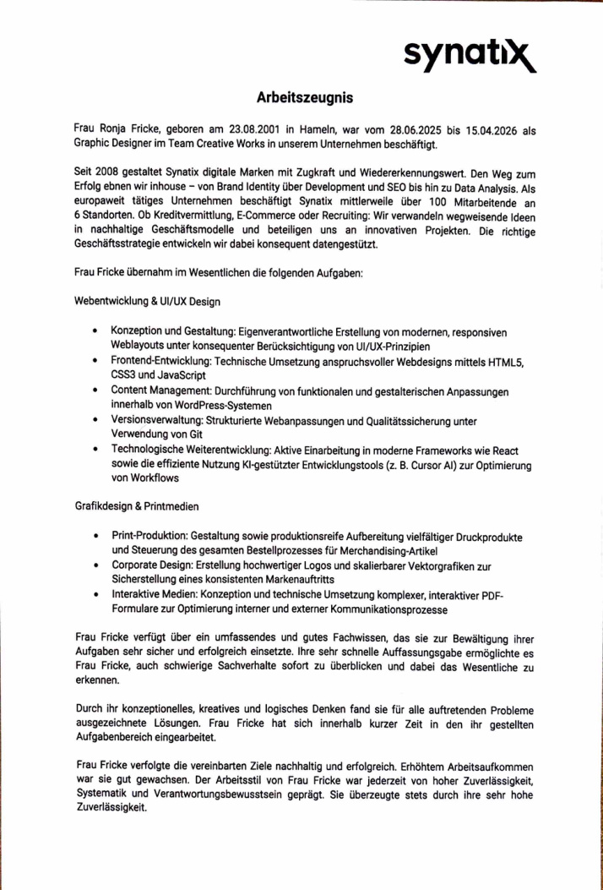
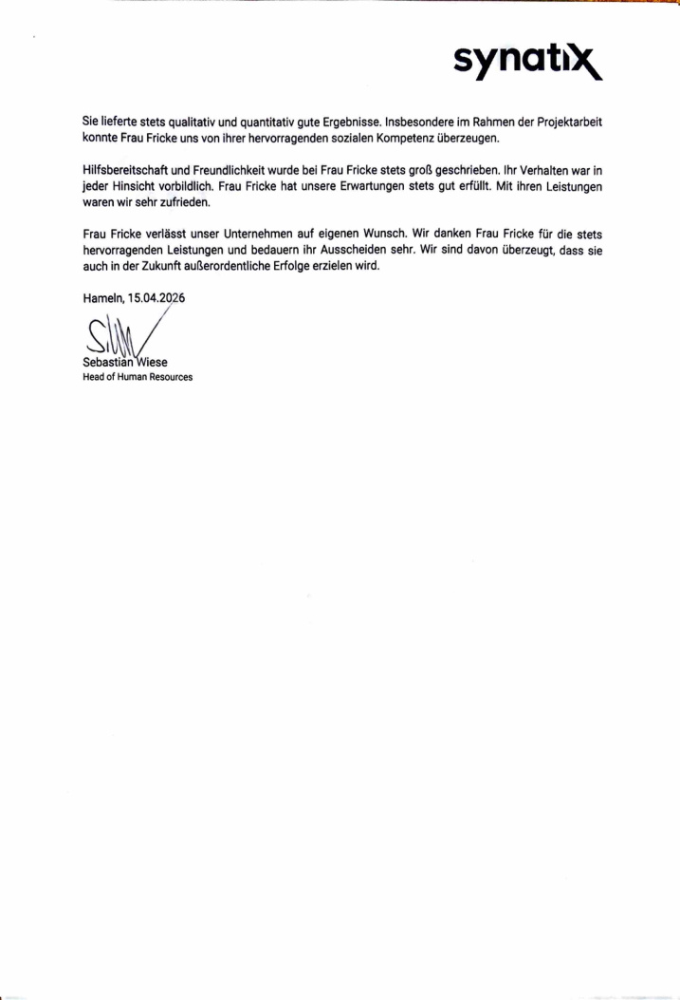
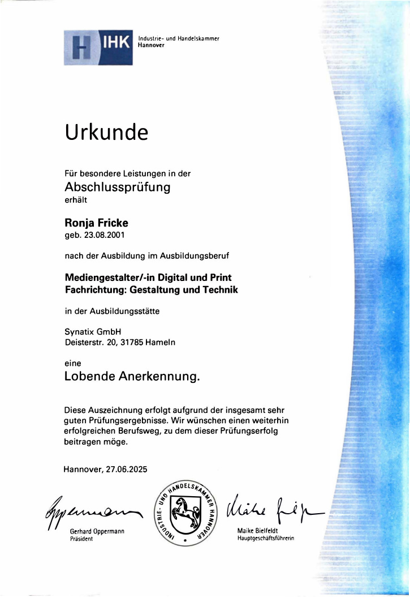
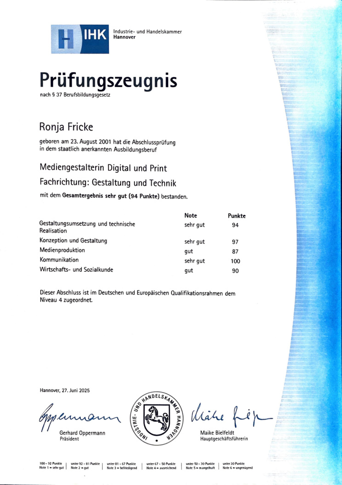
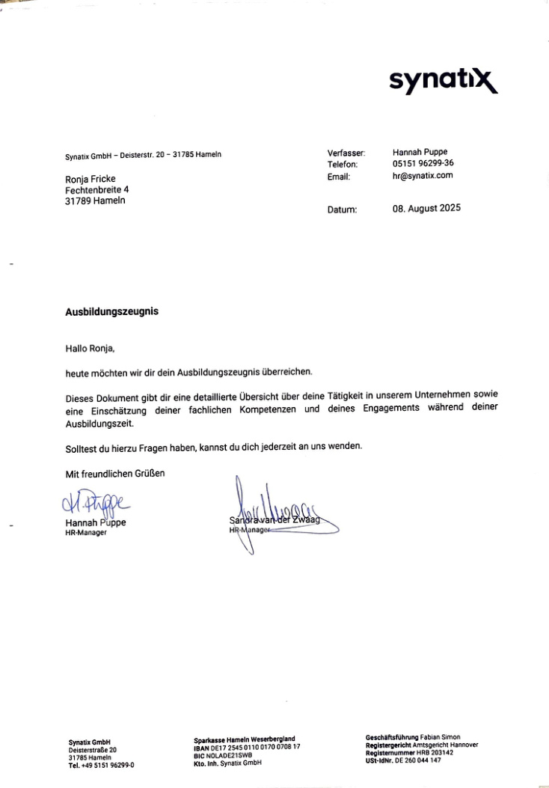
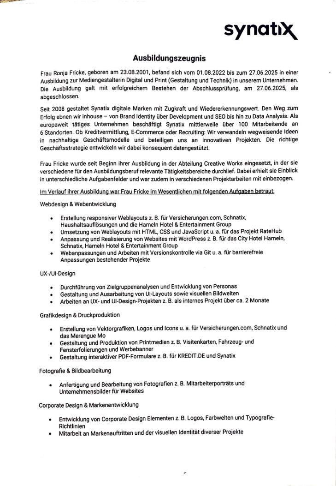
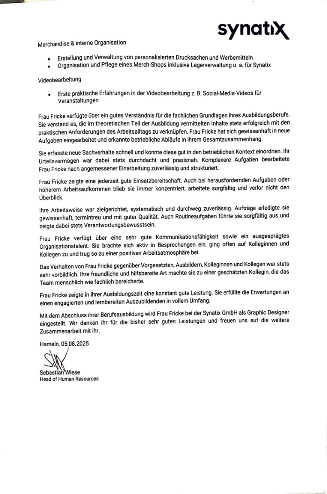

Verstehen & abstimmen.
Anforderungen aufnehmen, Rückfragen klären, Inhalte strukturieren und mit Kunden sowie internen und externen Ansprechpartnern abstimmen.
COMMUNICATION · DESIGN · DIGITAL
Gestaltung mit technischem Verständnis – für Kommunikation, die klar aussieht, funktioniert und im Kopf bleibt.
Ich gestalte nicht nur – ich möchte verstehen, wie ein Projekt funktioniert und wie alle Teile zusammenpassen.
Meine Ausbildung und anschließende Arbeit im Creative-Works-Team haben mir eine ungewöhnlich breite Basis gegeben: Kundenbetreuung und Organisation, Webentwicklung und UI/UX, Grafik und Print, Corporate Design, Fotografie, interaktive Medien sowie Produktionsvorbereitung und Beschaffung.
Ich kenne dabei nicht nur die gestalterische Seite: Ich habe Anforderungen abgestimmt, Websites gepflegt, Medien umgesetzt, externe Leistungen und Produkte bestellt und Projekte bis zum fertigen Ergebnis begleitet. Besonders liegt mir die Verbindung aus Gestaltung, Technik und Organisation.
„Konzeptionelles, kreatives und logisches Denken“ trifft auf hohe Zuverlässigkeit, Systematik und Verantwortungsbewusstsein.
Zeugnisse, Prüfungsergebnisse und berufliche Nachweise.







Die gezeigten Projekte entstanden im Rahmen meiner Tätigkeit bei Synatix. Ausgewählte Arbeiten aus Web, Digital und Print. Ein Klick öffnet die jeweilige Case-Ansicht mit den Originalmotiven.
Webdesign · Frontend · WordPress · Performance · Accessibility
Grafiken · Bilder · PDFs · Kampagnen · Ads · Socials
Messestände · Großflächen · Printmedien · Branding
Ich kenne Projekte nicht nur aus einer Perspektive.
In Ausbildung und Beruf habe ich Kunden betreut, Anforderungen aufgenommen, Inhalte und Gestaltung entwickelt, Websites gepflegt und umgesetzt, Produktionsdaten vorbereitet, externe Leistungen bestellt und Projekte bis zur fertigen Umsetzung begleitet.
Diese Bandbreite hilft mir, Zusammenhänge schnell zu verstehen und an Schnittstellen mitzudenken – zwischen Gestaltung, Technik, Produktion, Kunden und Organisation.
Anforderungen aufnehmen, Rückfragen klären, Inhalte strukturieren und mit Kunden sowie internen und externen Ansprechpartnern abstimmen.
Von digitalen Assets und Printmedien bis zu Websites: Ideen entwickeln, Gestaltung ausarbeiten und die technische beziehungsweise produktionsgerechte Umsetzung mitdenken.
Aufgaben koordinieren, externe Leistungen und Produkte beschaffen, Timings im Blick behalten und Projekte zuverlässig bis zum Ergebnis begleiten.
Meine Stärke ist die Verbindung verschiedener Disziplinen. Ich habe gelernt, Gestaltung nicht isoliert zu betrachten, sondern gemeinsam mit Technik, Produktion, Kommunikation und Organisation. Dadurch kann ich mich in unterschiedliche Aufgabenbereiche schnell einarbeiten und Projekte ganzheitlich begleiten.
Grafiken, Bildbearbeitung, interaktive PDFs, Social- und Event-Assets sowie digitale Inhalte entwickeln, aufbereiten und für unterschiedliche Kanäle passend umsetzen.
WordPress, HTML & CSS, Frontend-Anpassungen, UI/UX, Performance und Accessibility: Ich kann Gestaltung entwickeln und gleichzeitig nachvollziehen, was technisch dahinter passiert.
Printmedien, Messe- und Großflächen, Corporate Design und produktionsgerechte Daten vorbereiten. Externe Produkte und Leistungen auswählen, bestellen und die Umsetzung begleiten.
Kunden betreuen, Anforderungen aufnehmen, Abstimmungen begleiten, Aufgaben organisieren und interne wie externe Schnittstellen zusammenbringen.
Was ich mitbringe